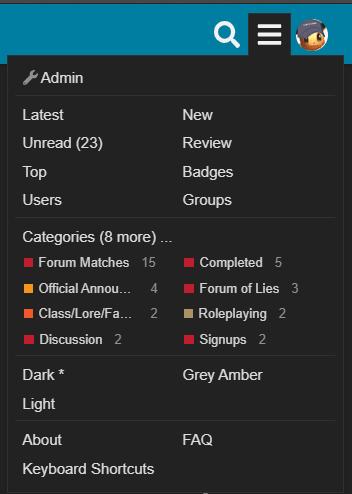

I love how
I’m in the spec chat for champs
But I only go there when Litten pings me with something really random

I love how
I’m in the spec chat for champs
But I only go there when Litten pings me with something really random
wait why are my things white now wtf

were these not colored?
am i crazy?
I’ve never used that menu so I wouldn’t know
I think it’s funny how it says FAQ (new) even though it’s been there for 4 years now
light mode is evil
I changed to it for about 10 seconds and I already hate it
No I believe it used to be blue colored
it turns out you do not want to play popcorn with more then 7 people
It’s hard to gauge people’s alignments when they are all spamming the thread D:
i literally posted this an hour ago
its fine.
its not like discord light mode which is objectively trash
it actually changes the color scheme, to one that works with the light colors (again, not like discord)
also its way easier on my eyes funnily enough
personal taste, but I get
bright text on a dark backround is blurry
the reverse is not
I use grey amber
It’s more of a mild color
gamers
rise
up
i can’t scratch the shit out of you without getting closer first
Oh god.
My mum made me let my sister play roblox on my account for two hours.
this just in:
move out ansrete best ship is now marshovel